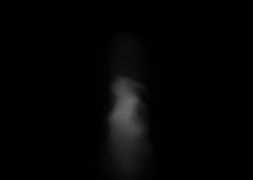
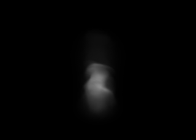
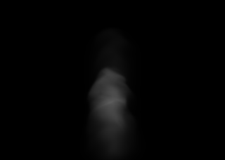
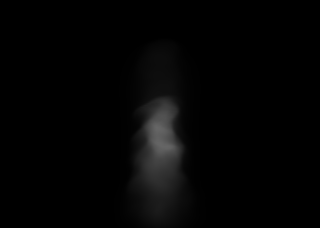

R6 adaptive participating-media smoke: quality-cost frontier
Exact R160 physical extinction is the reference. Every treatment uses an R40 parent-mean body and refines complete 4x4x4 residual bricks ranked by source-volume residual energy. Parent means conserve all extinction, selected bricks use access-guarded R160 values plus trilinear halo, and both camera rows use the identical persisted brick selection. PNGs use the same display-only 8x exposure; metrics are linear. Charged samples are a CPU hierarchy traversal model, not measured GPU timing.
Recorded native camera: asymmetric tongue and interior fold
DENSE R160 REFERENCE Exact physical extinction and matched Beer-Lambert transfer. Storage 100%; charged samples 100%.R40 COARSE ONLY No residual bricks. Storage 3.13%; charged samples 33.43%. nMSE 4.77e-3; peak error 13.66%. Horizontal collapse control.R40 + 90% RESIDUAL ENERGY 259 / 64,000 bricks; halo fine cells 0.63%; storage 3.75%; charged samples 33.80%. nMSE 5.55e-4; peak 5.57%.R40 + 95% RESIDUAL ENERGY 394 bricks; halo fine cells 0.89%; storage 4.01%; charged samples 33.99%. nMSE 2.58e-4; peak 3.32%.R40 + 98% RESIDUAL ENERGY 614 bricks; halo fine cells 1.36%; storage 4.48%; charged samples 34.30%. nMSE 9.59e-5; peak 2.46%.
R40 + 99% RESIDUAL ENERGY 789 bricks; halo fine cells 1.67%; storage 4.80%; charged samples 34.53%. nMSE 4.95e-5; peak 2.46%.
Elevated +35 camera: lateral fold and cavity boundary
DENSE R160 REFERENCE Same physical source under the disjoint elevated camera. Storage 100%; charged samples 100%.R40 COARSE ONLY No residual bricks. Storage 3.13%; charged samples 35.58%. nMSE 5.13e-3; peak error 14.20%. Cavity-softening control.R40 + 90% RESIDUAL ENERGY Same 259 bricks. Storage 3.75%; charged samples 35.89%. nMSE 4.37e-4; peak 4.41%.R40 + 95% RESIDUAL ENERGY Same 394 bricks. Storage 4.01%; charged samples 36.04%. nMSE 2.23e-4; peak 2.70%.
R40 + 98% RESIDUAL ENERGY Same 614 bricks. Storage 4.48%; charged samples 36.30%. nMSE 8.87e-5; peak 1.52%.R40 + 99% RESIDUAL ENERGY Same 789 bricks. Storage 4.80%; charged samples 36.51%. nMSE 4.67e-5; peak 1.03%.
Side +90 camera: hostile lateral body and layered envelope

DENSE R160 REFERENCE Same physical source under the disjoint side camera. Storage 100%; charged samples 100%.R40 COARSE ONLY No residual bricks. Storage 3.13%; charged samples 33.43%. nMSE 5.72e-3; peak error 19.05%. Layer-collapse control.R40 + 90% RESIDUAL ENERGY Same 259 bricks. Storage 3.75%; charged samples 33.79%. nMSE 6.73e-4; peak 8.32%.R40 + 95% RESIDUAL ENERGY Same 394 bricks. Storage 4.01%; charged samples 33.98%. nMSE 3.22e-4; peak 3.91%.R40 + 98% RESIDUAL ENERGY Same 614 bricks. Storage 4.48%; charged samples 34.29%. nMSE 1.27e-4; peak 2.41%.R40 + 99% RESIDUAL ENERGY Same 789 bricks. Storage 4.80%; charged samples 34.53%. nMSE 6.87e-5; peak 2.12%.
Back +180 camera: opposing tongue and interior support

DENSE R160 REFERENCE Same physical source under the disjoint back camera. Storage 100%; charged samples 100%.R40 COARSE ONLY No residual bricks. Storage 3.13%; charged samples 33.43%. nMSE 5.01e-3; peak error 13.66%. Interior-smearing control.R40 + 90% RESIDUAL ENERGY Same 259 bricks. Storage 3.75%; charged samples 33.79%. nMSE 5.23e-4; peak 5.18%.R40 + 95% RESIDUAL ENERGY Same 394 bricks. Storage 4.01%; charged samples 33.97%. nMSE 2.63e-4; peak 3.02%.R40 + 98% RESIDUAL ENERGY Same 614 bricks. Storage 4.48%; charged samples 34.28%. nMSE 9.81e-5; peak 2.73%.R40 + 99% RESIDUAL ENERGY Same 789 bricks. Storage 4.80%; charged samples 34.52%. nMSE 5.00e-5; peak 1.72%.